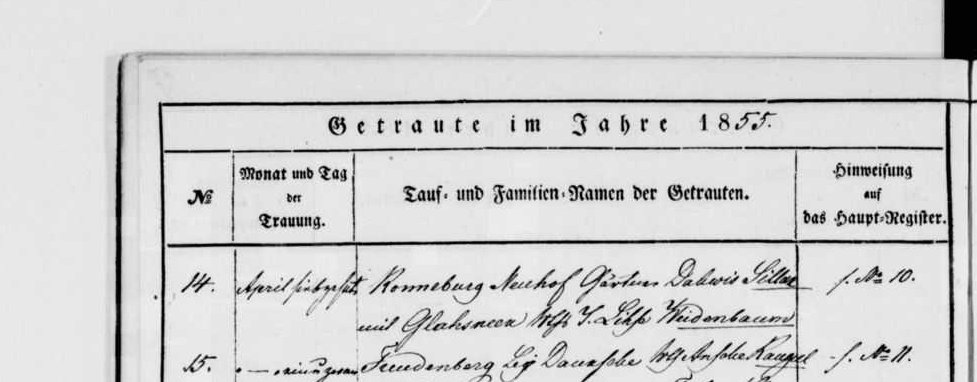
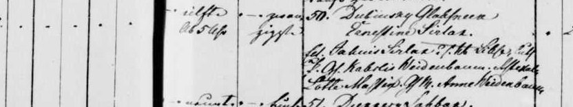
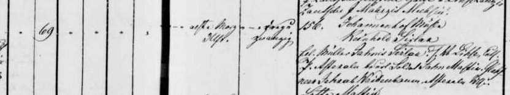
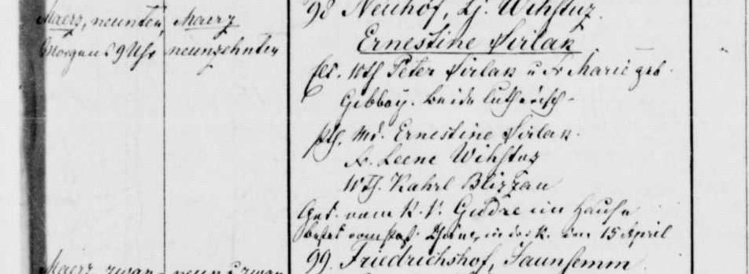

Ernestīne Sirlaka b. 1860
Peter's first cousin 4 times removed.
Also recorded as Ernestīne Sirlaks.
Ernestīne Sirlaka was born on 23 Mar 1860 in Glāznieki farm, Cēsis, Cēsis district, Vidzeme, Latvia2,3,4, the daughter of Jānis Sirlaks and Līze Veidenbauma2,3. She has died (according to an online family tree)7, but the date of death is not yet documented.
Family
- Parents
- Jānis Sirlaks 1829–1901 and Līze Veidenbauma 1836–1902 documented
Life events
| Event | Date | Place and details |
|---|---|---|
| Born | 23 Mar 1860 | Glāznieki farm, Cēsis, Cēsis district, Vidzeme, Latvia Old Style (Julian) date: 11 Mar 18602,3,4 |
| Lived | bet 20 Sep 1862 and 1866 | Jāņmuiža, Priekuļi, Cēsis district, Vidzeme, Latvia5 |
| Lived | bet 1869 and 1880 | Vīstuči farm, Jaunrauna, Rauna, Cēsis district, Vidzeme, Latvia6 |
| Died | not yet documented | According to an online family tree7 |
Records




Sources
- MyHeritage family tree 'Dzimta' of Peter's third cousin (his family site), member GEDCOM export of 26 Oct 2026, I126 (person-6000126), GEDCOM lines 3923–3946.
NAME Ernestīne /Sirlaks/
His confirmed Smart Match with another tree: Strengu radi un kaimiņi, Ernestīne Silārs (added by confirming the match). His confirmed Smart Match with another tree: Voroņinu dzimtas lapa, https://www.myheritage.lv/person-1527227_OYYV6GBPG4CM5LFSTTVZUJF4R3XV7FQ_OYYV6GBPG4CM5LFSTTVZUJF4R3XV7FQ/ernest%C4%ABne-sil%C4%81rs (added by confirming the match).
- Ainas Sirlakas atmiņas ("Vīstuči"), Aina Jurciņa née Sirlaka, Priekuļi, 1998, p. 8, section "MĀRČA BRĀĻA JĀŅA GAITAS".
Ernestīne dzim. “Glāzniekos” 1860.
Translation: Ernestīne, born at "Glāznieki" 1860
parents: Jānis Sirlaks and Līze née Veidenbaums. Not to be confused with Pēteris’s daughter Ernestīne (b. 1879).
- S-sweep-sirlaks-frontier-https-www-raduraksti-arhivi-lv-objects-1-4-1, LVVA f. 235, apr. 7, l. 104 (Cēsu lauku latviešu draudzes 1847.–1879. g. dzimušo un kristīto reģistrs), image 188, right page, 1860 no. 50, LVVA f. 235, apr. 4, l. 588, image 5.
eilfte Ab. 5 Uhr | zwanzigsten | 50. Dubinsay Glahsneek. Ernestine Sirlak. Elt. [?] Jahnis Sirlak u. d. [?] Lihse, luth. Pth: [?] Kahrlis Weidenbaum, [?] Lotte Massing[?], [?] Anne Weidenbaum
Translation: Born the 11th, 5 p.m.; baptised the 20th [March 1860]. No. 50. Glāznieki (Dubinsay[?] estate): Ernestīne Sirlak. Parents: Jānis Sirlak and wife Līze, Lutheran. Godparents: Kārlis Weidenbaum, Lotte Massing[?], Anne Weidenbaum.
Cēsis rural baptisms 1860 no. 50. Born on the 11th, 5 p.m. (Ab. 5 Uhr), baptised on the 20th, in the March run of entries (nos 43–49 are 2–7 March). Parents: Jahnis Sirlak and his wife Lihse, Lutheran. Godparents: Kahrlis Weidenbaum, [?] Lotte Massing[?], and Anne Weidenbaum (a maid, [?]). This is the memoir's 'Ernestīne b. Glāzniekos 1860'.
- MyHeritage family tree 'Dzimta' of Peter's third cousin (his family site), member GEDCOM export of 26 Oct 2026, I126 (person-6000126), GEDCOM lines 3923–3946.
BIRT · 11 MAR 1860 · Cēsu " Glāzniekos"
Date: Julian (Old Style), as in the church books: = 23 Mar 1860 (Gregorian), as we have it.
- Jāņmuiža mill household of Jānis Sirlaks (1862–1866).
156. Johannenhof Mühle. Reinhold Sirlak. Elt. Müller Jahnis Sirlak u. d. Lihse
Inferred to have lived as a young child with her parents Jānis and Līze Sirlaks at the Jāņmuiža watermill ('Johannenhof Mühle'), where her brother Reinholds (1862) and sister Minna (1866) were born.
- Godparent Md. Ernestine Sirlak at Lejas Vīstuči (1879).
98 Neuhof, Lj. Wihstuz. Ernestine Sirlak … Pth. Md. Ernestine Sirlak
Moved as a child with her parents in 1869 to Kalna Vīstuči on the Jaunrauna estate and stood godmother as 'Md. Ernestine Sirlak' at Lejas Vīstuči on 19/31 March 1879 (Rauna births 1879 no. 98).
- MyHeritage family tree 'Dzimta' of Peter's third cousin (his family site), member GEDCOM export of 26 Oct 2026, I126 (person-6000126), GEDCOM lines 3923–3946.
DEAT · Y (marked deceased; no date or place)